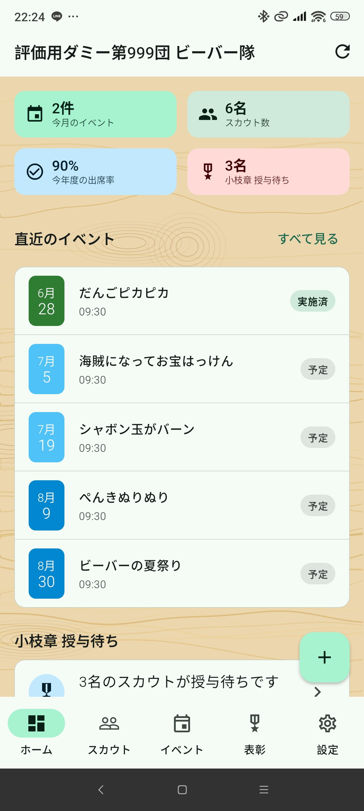
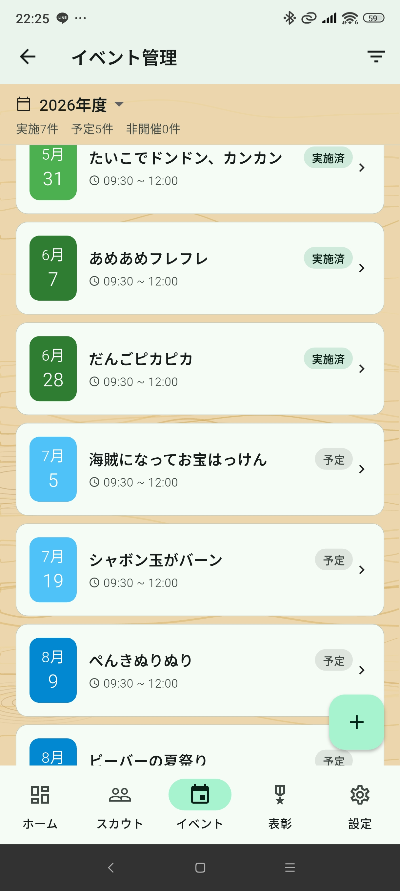
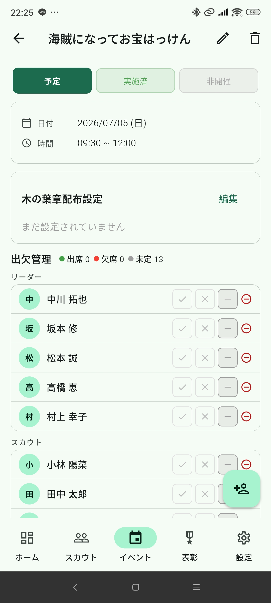
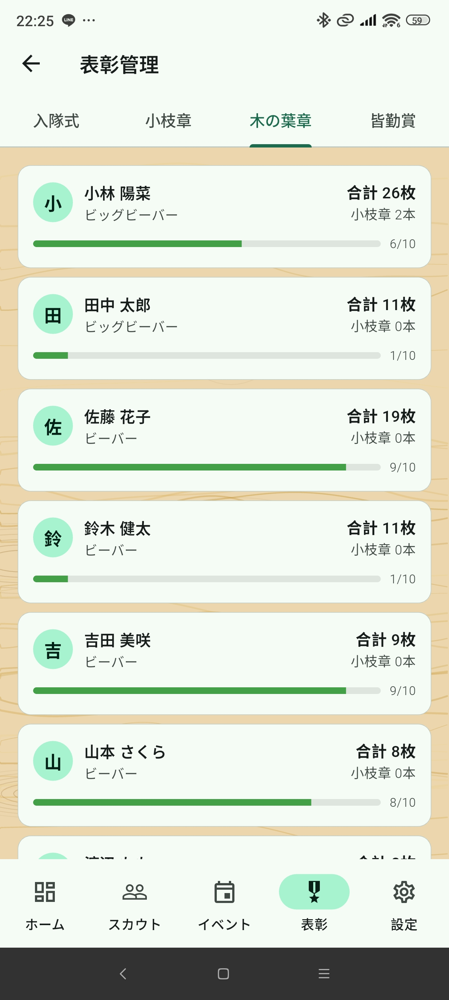

概要
メンバー（member）はスカウト・イベント・表彰の登録・編集など主要な操作が行えます。利用者管理・招待コード発行などの管理者専用機能は使用できません。
管理者との違いは「利用者管理」と「招待コード」メニューが表示されない点のみです。その他の操作は同じです。
ホーム（ダッシュボード）
アプリ起動時に表示されるトップ画面です。

表示内容
- 今月のイベント数・スカウト数・平均出席率・小枝章授与待ち数
- 直近2ヶ月のイベント一覧（日付・タイトル・場所・開始時間・ステータス）
- 小枝章授与待ちのスカウトがいる場合はカードで通知
- 今月誕生日のスカウト（氏名・日付・年齢）
イベントを追加する
画面右下の ＋ボタン（FAB） をタップしてイベント作成画面へ移動できます。
スカウト管理

一覧・検索
- 氏名検索・分類フィルタで絞り込みができます
- 一覧には氏名・分類・木の葉章枚数・小枝章授与待ちが表示されます
スカウトを追加する
- 右下の ＋ボタン をタップ
- 氏・名（両方必須）、性別、学年、誕生日、アレルギー、特記事項を入力
- 右上の 保存アイコン をタップして保存
氏名は「氏」「名」を別フィールドで入力します。保存時にスペースで結合されます。
スカウトを編集・削除する
スカウト詳細画面から編集・削除ができます。
出欠履歴または保護者紐付けがある場合は削除できません。
スカウト分類
| 分類 | デフォルト出席 | 小枝章対象 |
|---|---|---|
| ビッグビーバー | ○ | ○ |
| ビーバー | ○ | ○ |
| 仮入隊 | ○ | × |
| 体験 | ○ | × |
| 兄弟姉妹 | ○ | × |
| 上進・退団・入隊せず | × | × |
保護者の紐付け
スカウト詳細画面の「保護者」セクションから保護者を紐付け・解除できます。
イベント管理

一覧
年度（4月始まり）ドロップダウンとステータスフィルタで絞り込みができます。
イベントを追加する
- 右下の ＋ボタン をタップ
- タイトル・開催日・開始時間・終了時間・場所・備考を入力
- 右上の 保存アイコン をタップして保存
デフォルトの時間は開始09:30・終了12:00です。
イベント詳細・出欠管理

- ステータス：「予定」「確定」「非開催」の3ボタンで切り替え
- 木の葉章配布設定：健康・表現・生活・自然・社会の5種別をON/OFF
- 出欠管理：出席（✓）・欠席（×）・未定（—）をトグル
- 出席者追加：右下のFABからリーダー・スカウト・保護者・団委員ほかの4タブで追加
イベントを「確定」にする
- ステータスを「確定」に変更
- 確認ダイアログで「OK」
- 出席スカウト全員に木の葉章が自動加算されます
確定後は出欠の編集・削除・木の葉章設定の変更ができません。
ステータスについて
| ステータス | 説明 |
|---|---|
| 予定 | デフォルト。編集可能 |
| 確定 | 木の葉章を反映済み。編集不可 |
| 非開催 | 木の葉章に影響なし。確定済みからは変更不可 |
表彰管理

入隊タブ
入隊日が未入力のビーバー・ビッグビーバーを表示します。スカウト詳細から入隊日を入力してください。
小枝章タブ
木の葉章10枚ごとに小枝章の権利が発生します。授与待ちスカウトの「授与」ボタンをタップして授与してください。
木の葉章タブ
デフォルト出席対象スカウトを木の葉章合計枚数の降順で表示します。
皆勤賞タブ
年度内の確定済みイベント全てに出席したビーバー・ビッグビーバーを表示します。
設定
設定画面の上部に団名・ログインユーザー名・ロールバッジが表示されます。ログアウトは右上のアイコンボタンから行います。
利用できる設定メニュー
| メニュー | 内容 |
|---|---|
| 団情報 | 団名・場所・連絡先の確認・編集 |
| リーダー | リーダーの追加・編集・削除 |
| 保護者 | 保護者の追加・編集・削除 |
| 団委員ほか | 団委員等の追加・編集・削除 |
| 電話帳 | 全員の連絡先一覧 |
| アレルギー情報 | アレルギーのあるスカウトのサマリー |
| アカウントを削除する | 自分のアカウントを削除 |
「利用者管理」と「招待コード」は管理者のみ表示されます。